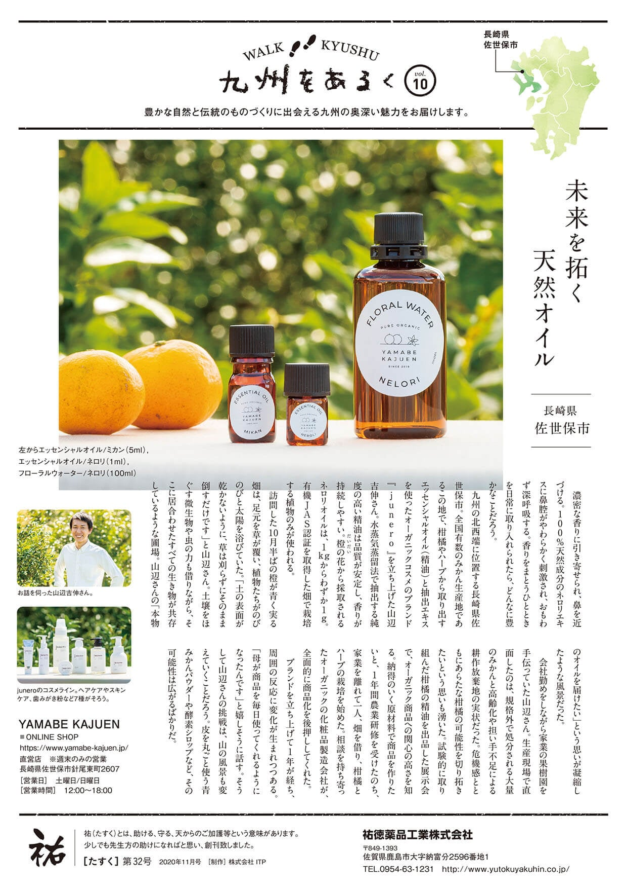
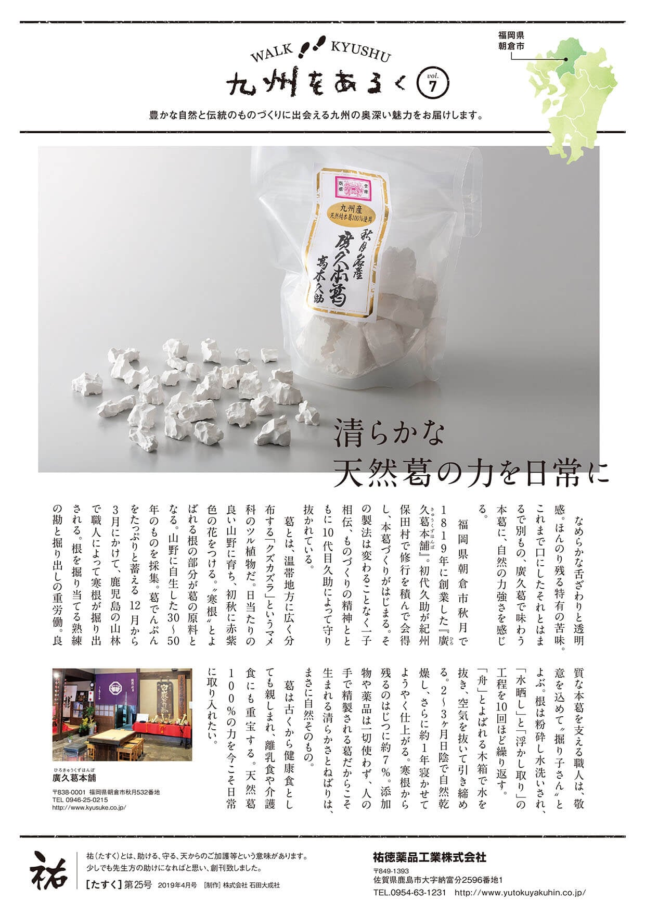

2022年10月 ［43号］ 2022年8月 ［42号］ 2022年5月 ［41号］ 2022年3月 ［40号］ 2022年2月 ［39号］ 2021年11月 ［38号］ 2021年10月 ［37号］ 2021年7月 ［36号］ 2021年5月 ［35号］ 2021年3月 ［34号］ 2021年1月 ［33号］  2020年11月 ［32号］ 2020年10月 ［31号］ 2020年7月 ［30号］ 2020年5月 ［29号］ 2020年1月 ［28号］ 2019年10月 ［27号］ 2019年7月 ［26号］  2019年4月 ［25号］ 2018年9月 ［23号］ 2018年5月 ［22号］ 2018年1月 ［21号］ 2017年9月 ［20号］ 2017年6月 ［19号］ 2017年1月 ［18号］ 2017年10月 ［17号］ 2016年7月 ［16号］ 2016年4月 ［15号］ 2016年1月 ［14号］ 2015年10月 ［13号］ 2015年7月 ［12号］ 2015年4月 ［11号］ 2015年1月 ［10号］ 2014年10月 ［9号］ 2014年7月 ［8号］ 2014年4月 ［7号］ 2014年1月 ［6号］